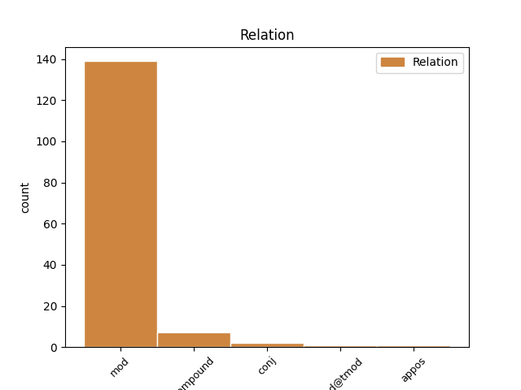
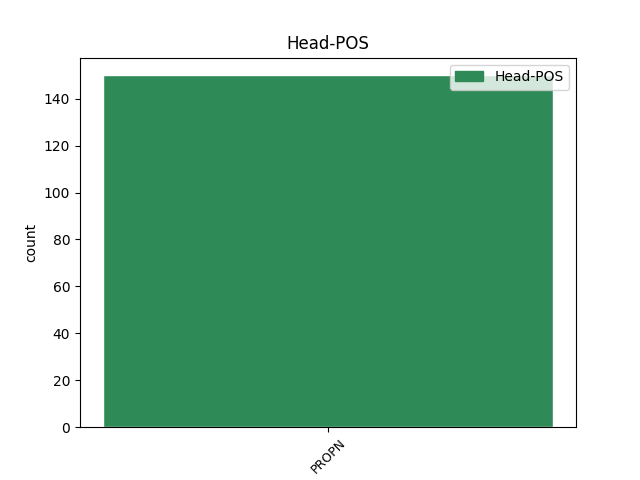
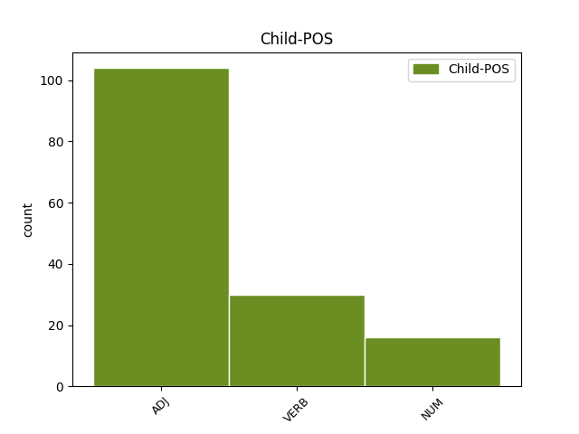

Distribution of features within this leaf



Agreement Rules sorted by frequency.
- When the dependent token is the modifer(mod) of the head token, and the head token is PROPN and the dependent token is ADJ.
1 NOI _ _ _ _ 0 _ _ _
2 GRIGORIE _ _ _ _ 0 _ _ _
3 GHICA _ _ _ _ 0 _ _ _
4 VV. _ _ _ _ 0 _ _ _
5 , _ _ _ _ 0 _ _ _
6 DOMN _ _ _ _ 0 _ _ _
7 ŢĂRII Țară PROPN Npfsoy Case=Dat,Gen|Definite=Def|Gender=Fem|Number=Sing 0 _ _ _
8 ROMÎNEŞTI românesc ADJ Afpfson Case=Dat,Gen|Definite=Ind|Degree=Pos|Gender=Fem|Number=Sing 7 mod _ ref=COMPLETARE.8
9 După _ _ _ _ 0 _ _ _
10 necontenitele _ _ _ _ 0 _ _ _
11 prigoniri _ _ _ _ 0 _ _ _
12 ce _ _ _ _ 0 _ _ _
13 să _ _ _ _ 0 _ _ _
14 urma _ _ _ _ 0 _ _ _
15 pînă _ _ _ _ 0 _ _ _
16 acum _ _ _ _ 0 _ _ _
17 între _ _ _ _ 0 _ _ _
18 stăpînii _ _ _ _ 0 _ _ _
19 moșiilor _ _ _ _ 0 _ _ _
20 cu _ _ _ _ 0 _ _ _
21 clăcașii _ _ _ _ 0 _ _ _
22 lor _ _ _ _ 0 _ _ _
23 asupra _ _ _ _ 0 _ _ _
24 ponturilor _ _ _ _ 0 _ _ _
25 de _ _ _ _ 0 _ _ _
26 mai _ _ _ _ 0 _ _ _
27 sus _ _ _ _ 0 _ _ _
28 arătate _ _ _ _ 0 _ _ _
29 : _ _ _ _ 0 _ _ _
30 nefiind _ _ _ _ 0 _ _ _
31 deslușite _ _ _ _ 0 _ _ _
32 întru _ _ _ _ 0 _ _ _
33 această _ _ _ _ 0 _ _ _
34 Pravilă _ _ _ _ 0 _ _ _
35 a _ _ _ _ 0 _ _ _
36 pămîntului _ _ _ _ 0 _ _ _
37 . _ _ _ _ 0 _ _ _
1 Fiind _ _ _ _ 0 _ _ _
2 orînduit _ _ _ _ 0 _ _ _
3 de _ _ _ _ 0 _ _ _
4 am _ _ _ _ 0 _ _ _
5 protocolit _ _ _ _ 0 _ _ _
6 toate _ _ _ _ 0 _ _ _
7 acestea _ _ _ _ 0 _ _ _
8 Prăvili _ _ _ _ 0 _ _ _
9 după _ _ _ _ 0 _ _ _
10 izvoadele _ _ _ _ 0 _ _ _
11 ce _ _ _ _ 0 _ _ _
12 prin _ _ _ _ 0 _ _ _
13 sfat _ _ _ _ 0 _ _ _
14 de _ _ _ _ 0 _ _ _
15 obște _ _ _ _ 0 _ _ _
16 s _ _ _ _ 0 _ _ _
17 -au _ _ _ _ 0 _ _ _
18 alcătuit _ _ _ _ 0 _ _ _
19 și _ _ _ _ 0 _ _ _
20 găsindu _ _ _ _ 0 _ _ _
21 -le _ _ _ _ 0 _ _ _
22 întocmai _ _ _ _ 0 _ _ _
23 așezate _ _ _ _ 0 _ _ _
24 din _ _ _ _ 0 _ _ _
25 cuvînt _ _ _ _ 0 _ _ _
26 în _ _ _ _ 0 _ _ _
27 cuvînt _ _ _ _ 0 _ _ _
28 și _ _ _ _ 0 _ _ _
29 fără _ _ _ _ 0 _ _ _
30 cîtuși _ _ _ _ 0 _ _ _
31 de _ _ _ _ 0 _ _ _
32 puțină _ _ _ _ 0 _ _ _
33 schimbare _ _ _ _ 0 _ _ _
34 le- _ _ _ _ 0 _ _ _
35 am _ _ _ _ 0 _ _ _
36 adeverit _ _ _ _ 0 _ _ _
37 și _ _ _ _ 0 _ _ _
38 însum _ _ _ _ 0 _ _ _
39 cu _ _ _ _ 0 _ _ _
40 iscălitura _ _ _ _ 0 _ _ _
41 în _ _ _ _ 0 _ _ _
42 toate _ _ _ _ 0 _ _ _
43 foile _ _ _ _ 0 _ _ _
44 precum _ _ _ _ 0 _ _ _
45 să _ _ _ _ 0 _ _ _
46 văd _ _ _ _ 0 _ _ _
47 în _ _ _ _ 0 _ _ _
48 jos _ _ _ _ 0 _ _ _
49 punîndu _ _ _ _ 0 _ _ _
50 -să _ _ _ _ 0 _ _ _
51 și _ _ _ _ 0 _ _ _
52 Luminată lumina VERB Vmp--sf-p--r Case=Acc,Nom|Gender=Fem|Number=Sing|Polarity=Pos|VerbForm=Part 53 mod _ ref=ANAFORA.4
53 Peceatea pecete PROPN Npfsry Case=Acc,Nom|Definite=Def|Gender=Fem|Number=Sing 0 _ _ _
54 Mării _ _ _ _ 0 _ _ _
55 sale _ _ _ _ 0 _ _ _
56 la _ _ _ _ 0 _ _ _
57 fieștecare _ _ _ _ 0 _ _ _
58 foae _ _ _ _ 0 _ _ _
59 . _ _ _ _ 0 _ _ _
1 Şi _ _ _ _ 0 _ _ _
2 aceiși _ _ _ _ 0 _ _ _
3 cel _ _ _ _ 0 _ _ _
4 boiarin _ _ _ _ 0 _ _ _
5 scoase _ _ _ _ 0 _ _ _
6 celuia _ _ _ _ 0 _ _ _
7 scumpul _ _ _ _ 0 _ _ _
8 un _ _ _ _ 0 _ _ _
9 ochiu _ _ _ _ 0 _ _ _
10 și _ _ _ _ 0 _ _ _
11 lui _ _ _ _ 0 _ _ _
12 Scarson Scarson PROPN Npmsrn Case=Acc,Nom|Definite=Ind|Gender=Masc|Number=Sing 0 _ _ _
13 amîndoi amândoi NUM Mlmpr Case=Acc,Nom|Gender=Masc|Number=Plur|NumType=Card|PronType=Tot 12 mod _ SpaceAfter=No
14 . _ _ _ _ 0 _ _ _
1 Mănăstirea _ _ _ _ 0 _ _ _
2 Vărzărești _ _ _ _ 0 _ _ _
3 tot _ _ _ _ 0 _ _ _
4 de _ _ _ _ 0 _ _ _
5 Ştefan Ștefan PROPN Npmsrn Case=Acc,Nom|Definite=Ind|Gender=Masc|Number=Sing 0 _ _ _
6 cel _ _ _ _ 0 _ _ _
7 Mare mare ADJ Afpmsrn Case=Acc,Nom|Definite=Ind|Degree=Pos|Gender=Masc|Number=Sing 5 compound _ _
8 a _ _ _ _ 0 _ _ _
9 fost _ _ _ _ 0 _ _ _
10 făcută _ _ _ _ 0 _ _ _
11 . _ _ _ _ 0 _ _ _
1 Şi _ _ _ _ 0 _ _ _
2 S _ _ _ _ 0 _ _ _
3 -au _ _ _ _ 0 _ _ _
4 arătat _ _ _ _ 0 _ _ _
5 Chifei Chifa PROPN Npmsoy Case=Dat,Gen|Definite=Def|Gender=Masc|Number=Sing 0 _ _ _
6 , _ _ _ _ 0 _ _ _
7 de _ _ _ _ 0 _ _ _
8 -acii _ _ _ _ 0 _ _ _
9 celor _ _ _ _ 0 _ _ _
10 doisprăzeace doisprezece NUM Mcmp-l Gender=Masc|Number=Plur|NumForm=Word|NumType=Card 5 conj _ ref=PAVEL_1.CORINT_15.5|SpaceAfter=No
11 . _ _ _ _ 0 _ _ _
Disagree Examples:
1 Iară _ _ _ _ 0 _ _ _
2 în _ _ _ _ 0 _ _ _
3 al _ _ _ _ 0 _ _ _
4 cincilesprăzeace _ _ _ _ 0 _ _ _
5 an _ _ _ _ 0 _ _ _
6 a _ _ _ _ 0 _ _ _
7 împărății _ _ _ _ 0 _ _ _
8 lui _ _ _ _ 0 _ _ _
9 Tiverie _ _ _ _ 0 _ _ _
10 împărat _ _ _ _ 0 _ _ _
11 , _ _ _ _ 0 _ _ _
12 fiind _ _ _ _ 0 _ _ _
13 dregători _ _ _ _ 0 _ _ _
14 în _ _ _ _ 0 _ _ _
15 Iudea _ _ _ _ 0 _ _ _
16 , _ _ _ _ 0 _ _ _
17 Pilat _ _ _ _ 0 _ _ _
18 den _ _ _ _ 0 _ _ _
19 Pont _ _ _ _ 0 _ _ _
20 și _ _ _ _ 0 _ _ _
21 Irod _ _ _ _ 0 _ _ _
22 biruitoriul _ _ _ _ 0 _ _ _
23 a _ _ _ _ 0 _ _ _
24 patra _ _ _ _ 0 _ _ _
25 parte _ _ _ _ 0 _ _ _
26 de _ _ _ _ 0 _ _ _
27 Galilea _ _ _ _ 0 _ _ _
28 , _ _ _ _ 0 _ _ _
29 și _ _ _ _ 0 _ _ _
30 Filip Filip PROPN Npmsrn Case=Acc,Nom|Definite=Ind|Gender=Masc|Number=Sing 0 _ _ _
31 , _ _ _ _ 0 _ _ _
32 fratele _ _ _ _ 0 _ _ _
33 lui _ _ _ _ 0 _ _ _
34 , _ _ _ _ 0 _ _ _
35 a _ _ _ _ 0 _ _ _
36 patra patru NUM Mofs-ly Gender=Fem|Number=Sing|NumForm=Word|NumType=Ord 30 mod _ ref=LUCA3.1
37 din _ _ _ _ 0 _ _ _
38 Tiriia _ _ _ _ 0 _ _ _
39 și _ _ _ _ 0 _ _ _
40 din _ _ _ _ 0 _ _ _
41 Trahonia _ _ _ _ 0 _ _ _
42 , _ _ _ _ 0 _ _ _
43 și _ _ _ _ 0 _ _ _
44 Lisanie _ _ _ _ 0 _ _ _
45 , _ _ _ _ 0 _ _ _
46 din _ _ _ _ 0 _ _ _
47 Avilinea _ _ _ _ 0 _ _ _
48 a _ _ _ _ 0 _ _ _
49 patra _ _ _ _ 0 _ _ _
50 . _ _ _ _ 0 _ _ _
1 Iară _ _ _ _ 0 _ _ _
2 în _ _ _ _ 0 _ _ _
3 al _ _ _ _ 0 _ _ _
4 cincilesprăzeace _ _ _ _ 0 _ _ _
5 an _ _ _ _ 0 _ _ _
6 a _ _ _ _ 0 _ _ _
7 împărății _ _ _ _ 0 _ _ _
8 lui _ _ _ _ 0 _ _ _
9 Tiverie _ _ _ _ 0 _ _ _
10 împărat _ _ _ _ 0 _ _ _
11 , _ _ _ _ 0 _ _ _
12 fiind _ _ _ _ 0 _ _ _
13 dregători _ _ _ _ 0 _ _ _
14 în _ _ _ _ 0 _ _ _
15 Iudea _ _ _ _ 0 _ _ _
16 , _ _ _ _ 0 _ _ _
17 Pilat _ _ _ _ 0 _ _ _
18 den _ _ _ _ 0 _ _ _
19 Pont _ _ _ _ 0 _ _ _
20 și _ _ _ _ 0 _ _ _
21 Irod _ _ _ _ 0 _ _ _
22 biruitoriul _ _ _ _ 0 _ _ _
23 a _ _ _ _ 0 _ _ _
24 patra _ _ _ _ 0 _ _ _
25 parte _ _ _ _ 0 _ _ _
26 de _ _ _ _ 0 _ _ _
27 Galilea _ _ _ _ 0 _ _ _
28 , _ _ _ _ 0 _ _ _
29 și _ _ _ _ 0 _ _ _
30 Filip _ _ _ _ 0 _ _ _
31 , _ _ _ _ 0 _ _ _
32 fratele _ _ _ _ 0 _ _ _
33 lui _ _ _ _ 0 _ _ _
34 , _ _ _ _ 0 _ _ _
35 a _ _ _ _ 0 _ _ _
36 patra _ _ _ _ 0 _ _ _
37 din _ _ _ _ 0 _ _ _
38 Tiriia _ _ _ _ 0 _ _ _
39 și _ _ _ _ 0 _ _ _
40 din _ _ _ _ 0 _ _ _
41 Trahonia _ _ _ _ 0 _ _ _
42 , _ _ _ _ 0 _ _ _
43 și _ _ _ _ 0 _ _ _
44 Lisanie Lisanie PROPN Npmsrn Case=Acc,Nom|Definite=Ind|Gender=Masc|Number=Sing 0 _ _ _
45 , _ _ _ _ 0 _ _ _
46 din _ _ _ _ 0 _ _ _
47 Avilinea _ _ _ _ 0 _ _ _
48 a _ _ _ _ 0 _ _ _
49 patra patru NUM Mofs-ly Gender=Fem|Number=Sing|NumForm=Word|NumType=Ord 44 mod _ ref=LUCA3.1|SpaceAfter=No
50 . _ _ _ _ 0 _ _ _
1 Pre _ _ _ _ 0 _ _ _
2 carele _ _ _ _ 0 _ _ _
3 -l _ _ _ _ 0 _ _ _
4 socotiia _ _ _ _ 0 _ _ _
5 toți _ _ _ _ 0 _ _ _
6 , _ _ _ _ 0 _ _ _
7 de _ _ _ _ 0 _ _ _
8 la _ _ _ _ 0 _ _ _
9 mic _ _ _ _ 0 _ _ _
10 pînă _ _ _ _ 0 _ _ _
11 la _ _ _ _ 0 _ _ _
12 mare _ _ _ _ 0 _ _ _
13 , _ _ _ _ 0 _ _ _
14 zicînd _ _ _ _ 0 _ _ _
15 : _ _ _ _ 0 _ _ _
16 Acesta _ _ _ _ 0 _ _ _
17 iaste _ _ _ _ 0 _ _ _
18 putearea _ _ _ _ 0 _ _ _
19 lui _ _ _ _ 0 _ _ _
20 Dumnezău Dumnezeu PROPN Npmsrn Case=Acc,Nom|Definite=Ind|Gender=Masc|Number=Sing 0 _ _ _
21 cea _ _ _ _ 0 _ _ _
22 mare mare ADJ Afpfsrn Case=Acc,Nom|Definite=Ind|Degree=Pos|Gender=Fem|Number=Sing 20 mod _ ref=ACTS_8.10|SpaceAfter=No
23 . _ _ _ _ 0 _ _ _
1 A _ _ _ _ 0 _ _ _
2 3 _ _ _ _ 0 _ _ _
3 -a _ _ _ _ 0 _ _ _
4 pun _ _ _ _ 0 _ _ _
5 în _ _ _ _ 0 _ _ _
6 rînd _ _ _ _ 0 _ _ _
7 1 _ _ _ _ 0 _ _ _
8 Timoteiu Timotei PROPN Npmsrn Case=Acc,Nom|Definite=Ind|Gender=Masc|Number=Sing 0 _ _ _
9 , _ _ _ _ 0 _ _ _
10 scrisă scrie VERB Vmp--sf-p--r Case=Acc,Nom|Gender=Fem|Number=Sing|Polarity=Pos|VerbForm=Part 8 mod _ ref=PAVEL_1.CORINT_PRED.41
11 den _ _ _ _ 0 _ _ _
12 Laodichiia _ _ _ _ 0 _ _ _
13 Frighiei _ _ _ _ 0 _ _ _
14 , _ _ _ _ 0 _ _ _
15 la _ _ _ _ 0 _ _ _
16 deanie _ _ _ _ 0 _ _ _
17 18 _ _ _ _ 0 _ _ _
18 , _ _ _ _ 0 _ _ _
19 23 _ _ _ _ 0 _ _ _
20 . _ _ _ _ 0 _ _ _
1 Întîi întâi NUM Momp-ln Definite=Ind|Gender=Masc|Number=Plur|NumForm=Word|NumType=Ord 5 mod@tmod _ ref=PAVEL_FILIP_PRED.8|SpaceAfter=No
2 -i _ _ _ _ 0 _ _ _
3 era _ _ _ _ 0 _ _ _
4 numele _ _ _ _ 0 _ _ _
5 Crinidia Crinidia PROPN Npfsry Case=Acc,Nom|Definite=Def|Gender=Fem|Number=Sing 0 _ _ _
6 , _ _ _ _ 0 _ _ _
7 pentru _ _ _ _ 0 _ _ _
8 izvoarăle _ _ _ _ 0 _ _ _
9 ce _ _ _ _ 0 _ _ _
10 cura _ _ _ _ 0 _ _ _
11 din _ _ _ _ 0 _ _ _
12 munte _ _ _ _ 0 _ _ _
13 , _ _ _ _ 0 _ _ _
14 în _ _ _ _ 0 _ _ _
15 carele _ _ _ _ 0 _ _ _
16 era _ _ _ _ 0 _ _ _
17 multe _ _ _ _ 0 _ _ _
18 vine _ _ _ _ 0 _ _ _
19 de _ _ _ _ 0 _ _ _
20 aur _ _ _ _ 0 _ _ _
21 , _ _ _ _ 0 _ _ _
22 și _ _ _ _ 0 _ _ _
23 pentru _ _ _ _ 0 _ _ _
24 aceastea _ _ _ _ 0 _ _ _
25 era _ _ _ _ 0 _ _ _
26 vestit _ _ _ _ 0 _ _ _
27 . _ _ _ _ 0 _ _ _